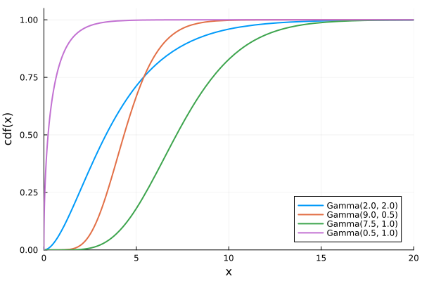

Distributions.jl
The Distributions package provides an extensive collection of probabilistic distributions and related functions. Each distribution is defined as a custom type, which allows creating instances of distributions.
julia> using Distributionsjulia> D = Normal(2, 0.5)Distributions.Normal{Float64}(μ=2.0, σ=0.5)
The example above creates the normal distribution with mean μ = 2 and standard deviation σ = 0.5. The Distributions package provides functions to compute mean, variance, or quantiles.
julia> mean(D)2.0julia> var(D)0.25julia> quantile(D, 0.9)2.6407757827723
The package also provides ways to evaluate probability or cumulative density functions.
julia> pdf(D, 2)0.7978845608028654julia> cdf(D, 2)0.5
In combination with the StatsPlots package, it is possible to plot probability density functions.
using StatsPlots
plot(
plot(D; title = "pdf"),
plot(D; func = cdf, title = "cdf");
legend = false,
xlabel = "x",
ylabel = "f(x)",
ylims = (0,1),
linewidth = 2,
layout = (1,2),
size = (800, 400)
)The Distributions package also provides methods to fit a distribution to a given set of samples.
julia> x = rand(Normal(2, 0.5), 10000); # generate 10000 random numbers from Normal(2, 0.5)julia> D = fit(Normal, x)Distributions.Normal{Float64}(μ=1.9985983866575185, σ=0.5003980692939886)
The fit function chooses a reasonable way to fit the distribution, which, in most cases, is the maximum likelihood estimation. However, this is not supported for all distributions. We can quickly check that the fit by using a histogram.
histogram(x; normalize = :pdf, legend = false, opacity = 0.5)
plot!(D; linewidth = 2, xlabel = "x", ylabel = "pdf(x)")Create a figure that shows the gamma distributions with the following parameters: (2, 2), (9, 0.5), (7.5, 1) and (0.5, 1).
Hint: to plot cumulative probability functions, use the Plots ability to plot functions.
Solution:
The easiest way to create multiple distributions is to use the broadcasting system.
Ds = Gamma.([2, 9, 7.5, 0.5], [2, 0.5, 1, 1])Similarly, we use broadcasting to create a vector of labels.
labels = reshape(string.("Gamma", params.(Ds)), 1, :)We need to reshape the labels to become a row vector. The reason is that we want to plot multiple distributions, and the Plot package expects that labels will be a row vector. Now, we call the plot function to plot all distributions.
plot(Ds;
xaxis = ("x", (0, 20)),
yaxis = ("pdf(x)", (0, 0.5)),
labels = labels,
linewidth = 2,
legend = :topright,
)A plot of the cumulative probability functions cannot be done in the same way. However, StatsPlots provides the func keyword argument that allows specifying which function should be plotted.
plot(Ds;
func = cdf,
xaxis = ("x", (0, 20)),
yaxis = ("cdf(x)", (0, 1.05)),
labels = labels,
linewidth = 2,
legend = :bottomright,
)Another possibility is to use the Plots package directly. To do so, we need to define a function with one argument, which at a given point returns the value of the cumulative probability function. Such functions for all our distributions can be easily defined as anonymous functions.
cdfs = [x -> cdf(D, x) for D in Ds]The previous expression returns a vector of functions. Now we can use the plot function to create a curve for each element of the vector of cumulative probability functions. The example below creates these curves for $x$ from $0$ to $20$.
plot(cdfs, 0, 20;
xaxis = ("x", (0, 20)),
yaxis = ("cdf(x)", (0, 1.05)),
labels = labels,
linewidth = 2,
legend = :bottomright,
)"/home/runner/work/Julia-for-Optimization-and-Learning/Julia-for-Optimization-and-Learning/docs/build/lecture_03/Gamma_cdf.svg"
BSON.jl
BSON is a package for working with the Binary JSON serialization format. It can be used as a general store for Julia's data structures. To save the data, BSON provides the bson function. The data can be passed to the function directly via keyword arguments
julia> using BSONjulia> BSON.bson("test2.bson", a = [1+2im, 3+4im], b = "Hello, World!")
or as a dictionary
julia> data = Dict(:a => [1+2im, 3+4im], :b => "Hello, World!")Dict{Symbol, Any} with 2 entries: :a => Complex{Int64}[1+2im, 3+4im] :b => "Hello, World!"julia> BSON.bson("test1.bson", data)
To load the data, BSON provides the load function that accepts the path to the data.
julia> BSON.load("test1.bson")Dict{Symbol, Any} with 2 entries: :a => Complex{Int64}[1+2im, 3+4im] :b => "Hello, World!"julia> BSON.load("test2.bson")Dict{Symbol, Any} with 2 entries: :a => Complex{Int64}[1+2im, 3+4im] :b => "Hello, World!"
The package also provides an alternative way to saving and loading data using the @save and @load macro.
julia> using BSON: @save, @loadjulia> a = [1+2im, 3+4im];julia> b = "Hello, World!";julia> @save "test.bson" a b # Same as abovejulia> @load "test.bson" a b # Loads `a` and `b` back into the workspace
ProgressMeter.jl
The ProgressMeter package provides excellent utilities for printing progress bars for long computations. The package provides the @showprogress macro that prints the progress bar for for loops.
julia> using ProgressMeter
julia> @showprogress 1 "Computing..." for i in 1:50
sleep(0.1)
end
Computing... 20%|███████▊ | ETA: 0:00:04The same syntax can also be used with the map, pmap or reduce functions. Progress bars can also be created manually, which allows additional formatting of the output. For example, it is possible to print and update information related to the computation by the showvalues keyword.
julia> x, n = 1 , 10;
julia> p = Progress(n);
julia> for iter in 1:10
x *= 2
sleep(0.5)
ProgressMeter.next!(p; showvalues = [(:iter, iter), (:x, x)])
end
Progress: 100%|█████████████████████████████████████████| Time: 0:00:10
iter: 10
x: 1024BenchmarkTools.jl
The BenchmarkTools package provides a framework for writing and running groups of benchmarks as well as comparing benchmark results. The primary macro provided by BenchmarkTools is the @benchmark macro
julia> using BenchmarkToolsjulia> @benchmark sin(x) setup=(x=rand())BenchmarkTools.Trial: 10000 samples with 1000 evaluations per sample. Range (min … max): 6.172 ns … 30.297 ns ┊ GC (min … max): 0.00% … 0.00% Time (median): 6.202 ns ┊ GC (median): 0.00% Time (mean ± σ): 6.948 ns ± 1.288 ns ┊ GC (mean ± σ): 0.00% ± 0.00% █ █▂▁▁▂▂▂▂▂▆▂▁▁▁▁▁▂▂▂▁▁▅▃▁▁▂▂▁▁▂▃▂▁▁▁▁▁▁▂▁▁▁▁▁▁▂▂▂▁▂▁▂▂▂▁▂▂▂ ▂ 6.17 ns Histogram: frequency by time 12.1 ns < Memory estimate: 0 bytes, allocs estimate: 0.
The setup expression is run once per sample and is not included in the timing results. Another handy macro provided by the package is the @btime macro. The output of this macro is similar to the built-in @time macro.
julia> A = rand(3,3);julia> @btime inv($A);478.959 ns (7 allocations: 1.88 KiB)
We use $ to interpolate variable A into the benchmark expression. Any expression that is interpolated in such a way is "pre-computed" before the benchmarking begins.